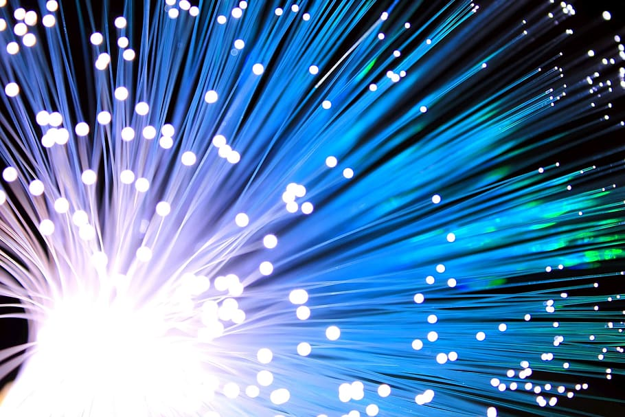

History of the Internet
What is the internet?
Created by Bob Kahn and Vint Cerf in the early 1970s, and evolved to what we know it as now, the internet is a network that connects computers across the world, allowing for information exchange. The internet works using small segments of information, called packets and these packets contain both the information and the data. The information packet has content known as header, which like a head, is the first thing to reach the machine that is receiving the information and it is what helps the machine understand what needs to be done with the packet. These packets are transported to their destination by routers. Every router has a path, and the most important factor is the politics and time management of the companies.
How do we get to our destination on webpages?
- All devices on the internet have unique IP addresses that are just numbers. These are unique to device or network. This helps build the Internet protocol or the IP, which basically helps sends messages to another server or computer to get to the right place.
- TCP (transmission Control Protocol) – this does a full inventory of the packets and allows for the information to be delivered, if the packets are missing the TCP send the packets back to their origination.
- HTTP (hypertext transfer protocol) is the language in which your computer and the main server communicate to get you to the right place. This is similar to get request.
- DNS (domain name system) associates names with corresponding addresses that the computer uses to look up domain names and get the associated IP address that is used to connect to the destination on the internet from DNS servers.
- HTTP or DNS (domain name system) manage the sending or receiving of web files.
- If a webpage has multiple images each image causes a separate HTTP request causing the browser to load slowly.
- Cookies are also important because they help servers identify your data and save, so they know who is sending the request.
- SSL and TLS are security measures that are often found as locks next to your https:/ links. These are secured connections that are given a digital certificates that are given by trusted securities.
There is also another component of how connectivity works.

Fiber optic cables help carry and direct long distance internet traffic to the right places. This is what allows the connectivity to happen across the world. These cables are buried in the ocean floor. Because fiber wires are expensive and hard to work with we often use copper wires for most networking. There are also wireless options. Wireless bit sending machines use radio signals to transfer bits from one place to another. The wireless bit sending machines that translate 1s and 0s to radio waves to send and the receiving machines reverses it to binary. Wireless still depends on wires though to get signals. Since speed is really important in getting the information needed, which was the original reason the internet was created, it is important to understand how speed works and is impacted. Intenet speed is usually talked about in bandwidth. The bandwidth is the maximum capacity of transmission of bits, this is measured by Bitrate that is the number of bits per second a system can transmit. Latency is the amount of time it takes for 1 bit to be received by the receiver. These bits are sent through ethernet wires, which causes a lot of signal loss within feet, so for world wide web, light is used to help transmit bits as light beams through fiber optic cables made of glass and mirrors.